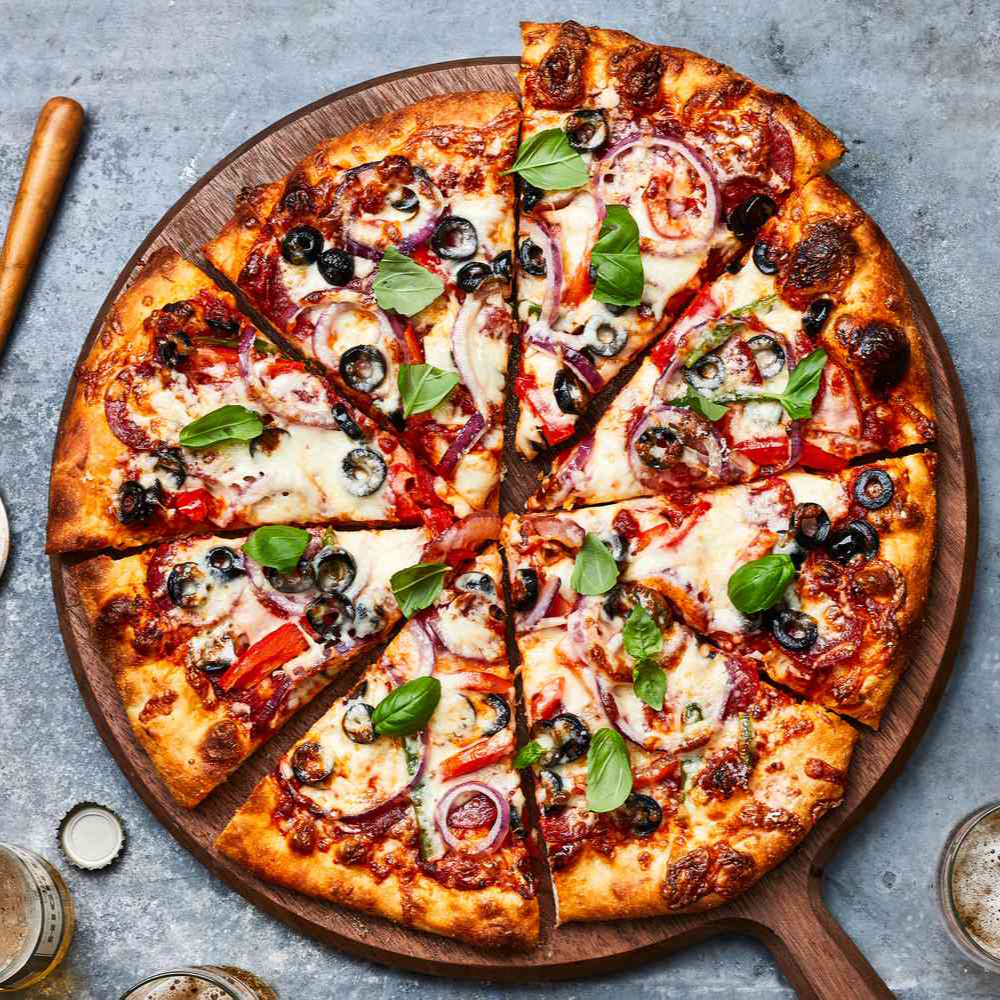

Ingredients:
Pizza Dough: yeast, sugar, warm water, flour, salt, olive oil Pizza Sauce: crushed tomatoes, garlic, oregano, basil, salt, black pepper Toppings: mozzarella cheese, pepperoni, bell peppers, onions, olives, mushrooms Instructions:
Make the pizza dough by combining ingredients, kneading, and letting it rise. Prepare the pizza sauce by simmering ingredients in a saucepan. Preheat the oven to 475°F (245°C) and assemble the pizza with sauce, cheese, and toppings. Bake for 12-15 minutes until the crust is golden and the cheese is bubbly. Let it cool, slice, and enjoy your homemade pizza!
Pizza
Author
Homemade pizza with this simple recipe. Enjoy a crispy crust, flavorful sauce, melted cheese, and your favorite toppings. Perfect for pizza enthusiasts or kitchen beginners, this recipe promises a mouthwatering result that rivals your favorite pizzeria.
Pizza Dough: yeast, sugar, warm water, flour, salt, olive oil Pizza Sauce: crushed tomatoes, garlic, oregano, basil, salt, black pepper Toppings: mozzarella cheese, pepperoni, bell peppers, onions, olives, mushrooms Instructions:
Make the pizza dough by combining ingredients, kneading, and letting it rise. Prepare the pizza sauce by simmering ingredients in a saucepan. Preheat the oven to 475°F (245°C) and assemble the pizza with sauce, cheese, and toppings. Bake for 12-15 minutes until the crust is golden and the cheese is bubbly. Let it cool, slice, and enjoy your homemade pizza!